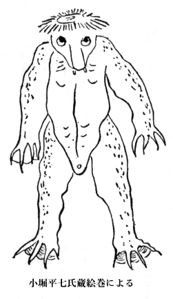
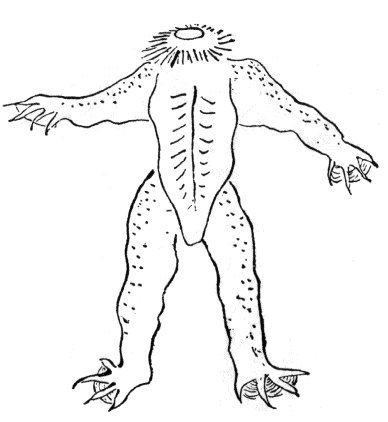
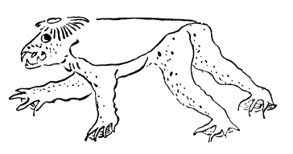
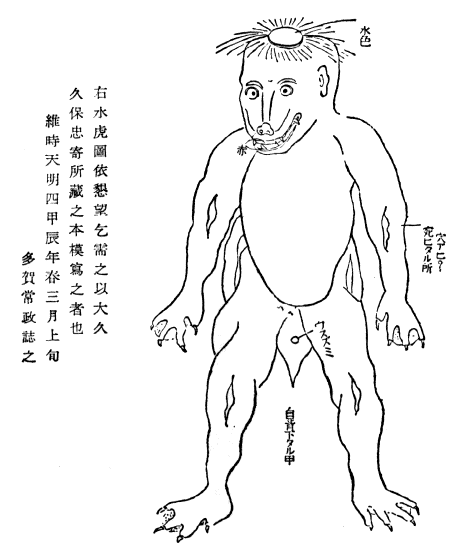
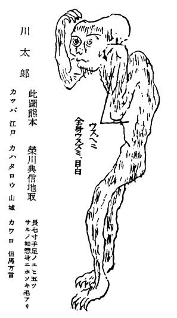
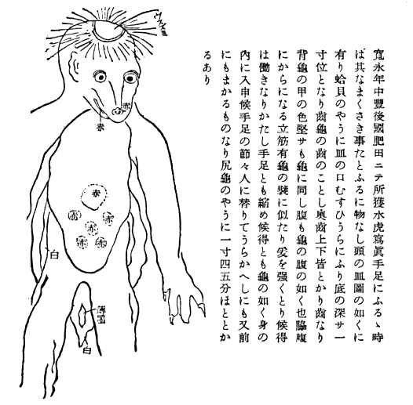
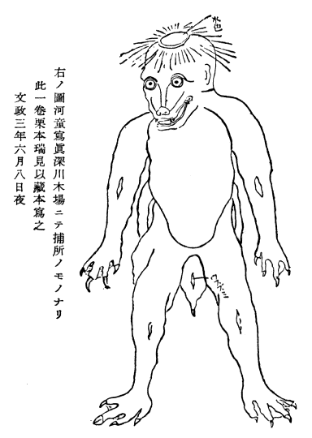
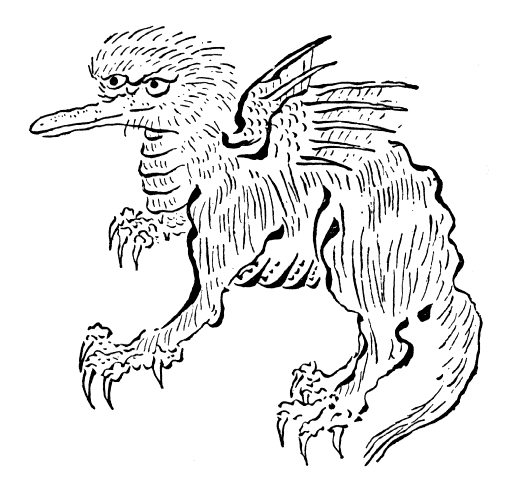
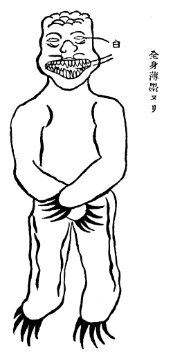

私はふた夏、壱岐の国へ渡つた。さうして此島が、凡北九州一円の河童伝説の吹きだまりになつてゐた事を知つた。尚考へて見ると、仄かながら水の神信仰の古い姿が、生きてこの島びとの上にはたらいて居るのを覚つた。其と今一つ、私はなるべく、認識不十分な他人の記録の奇事異聞を利用する前に、当時の実感を印象する自分の採訪帳を資料とする事が、民俗の学問の上に最大切な態度であると思ふ故に、壱岐及びその近島の伝承を中心として、この研究の概要を書く、一つの試みをもくろんだのである。
この話は、河童が、海の彼岸から来る尊い水の神の信仰に、土地々々の水の精霊の要素を交へて来たことを基礎として、綴つたのである。たゞ、茲には、その方面の証明の、甚しく興味のないのを虞れて、単に既に決定した前提のやうにして、書き進めたのである。
この話の中にさしこんだ河童の図は、すべて、元熊本藩の水練師範小堀平七さんの家に伝る、河童の絵巻から拝借した。
［＃改ページ］この話は、河童が、海の彼岸から来る尊い水の神の信仰に、土地々々の水の精霊の要素を交へて来たことを基礎として、綴つたのである。たゞ、茲には、その方面の証明の、甚しく興味のないのを虞れて、単に既に決定した前提のやうにして、書き進めたのである。
この話の中にさしこんだ河童の図は、すべて、元熊本藩の水練師範小堀平七さんの家に伝る、河童の絵巻から拝借した。
一 河童の女
河郎の恋する宿や夏の月
蕪村の句には、その絵に封ぜられたものが、極端に出てゐる。自由にふるまうた様でも、流派の伝襲には勝てなかつたのである。彼の心の土佐絵や浮世絵は誹諧の形を仮りて現れた。此句だつて、唯の墨書きではない。又単に所謂俳画なるものでもない。男に化けて、娘の宿を訪ふ河童。水郷の夜更けの夏の月。ある種の合巻を思はせる図どりである。かうした趣向は或は、蕪村自身の創作の様に見えるかも知れぬ。尤、近代の河童には、此点の欠けて居る伝説は多いが、以前はやつぱりあつたのである。私は、二度も壱岐の島を調べた。其結果、河を名とする処から、河童の本拠を河その他淡水のありかと思うて来た考へが、壊れて了うた。長者
平戸には、女のがあたろの話をしてゐる。ある分限者の家に仕へた女、毎日来ては、毎晩帰る。何処から来るか、家処をあかさない。ある時、後を

此二つの話で見ると、毎日海から出て来る事、家の富みに関係ある事、ある家主に使はれる事、主の失策を怨んで来なくなること、女姿の、子どもでないのもある事などが知れる。だが外に、通ひでなく、居なりの者もあつたらしい。
かうした物語を伴はぬ、信仰そのまゝの形は、日本国中に残つてゐる。「若狭井」型の他界観である。二月堂の「水とり」は、若狭の池の水を呼び出すのだと言ふ。諏訪の
此話には、河童とは言うて居ぬ。が、井・泉から、海に行き来したものゝあることは知れる。河童が、とんでもない山野・都邑の清水や井戸から、顔や姿を表した話は、どなたも、一つや二つ聞いた気がせられるはずだと信じる。
男であれ女であれ、人の姿を仮りて、人間と通婚する伝説にも亦、其本体を水界の物としたのが多い。前の殿川屋敷のも、此側の型を河童の中へ織りこんだものらしい。

馬の足がたゞけの溜り水があれば、河童が住んでゐると言ふ分布の広い諺も、地下水の信仰から、水の精霊は、何処へでも通ふものと考へたのである。厠の下から手を出して、いたづらをしたものは、大抵、狸になつて了うてゐるが、猿や猫とする例も少くない。だが、厠の様式にも、歴史があつた。其変化に伴うて、適当な動物が、入り替つて来た。だが、考へると、やはり水溜りだつたので、河童の通ひ路は

雪隠の下の河童の
殿川屋敷の

ある家の祖先の代に、河童が来て仕へた話は、大抵簡単になつてゐる。毎夜忍んで来て、きまつた魚を残して戻る。なぜ、今では来なくなつたとの問ひを予期した様に、皆結局がついてゐる。河童の大嫌ひなものを、故意に何時もの処に置いた。其を見て、恐れて魚を搬ばなくなつたと言ふのだ。河童が離れて、ある家の富みが失はれた形を、一部分失うた事に止めてゐるのが、魚の

二 河童使ひ
河童が、なぜ人に駆役せられる様になつたか。此には、日本国中大抵、其悪行の結果だとしてゐる。人畜を水に曳きこんだ、又、ひきこまうとしたのが、捉まつた為とするのである。
最初に結論から言はう。呪術者に
人に捉へられた河童は、其村の人をとらぬと言ふ誓文を立てる。或は其誓文は、ひき抜かれた腕を返して貰ふ為にする様になつてゐる。腕の脱け易い事も、河童からひき放されぬ、重要な条件となつてゐた時代があつたに違ひない。其が後には、妖怪の腕を切り落す形になつて行く。柳田先生は、此を河童考の力点として居られる。

其後、南方熊楠翁は、紀州日高で、河童をかしやんぼと言ふ理由を、火車の聯想だ、と決定せられた。思ふに、生人・死人をとり喰はうとする者を、すべてくわしやと称へた事があつたらしい。火車の姿を、猫の様に描いた本もある訣である。人を殺し、墓を掘り起す狼の如きも、火車一類として、猫化け同様の話を伝へてゐる。老女に化けて、留守を家に籠る子どもをおびき出して喰ふ話は、日本にもある。又、今昔物語以来、幾変形を経た弥三郎といふ猟師の母が、狼の心になつて、息子を出先の山で待ち伏せて喰はうとして、却て切られた越後の話などが其である。さう言ふ人喰ひの妖怪の災ひを除く必要は、特に、葬式・墓掘りの際にあつた。坊さんの知識から、火車なる語の出た順序は考へられる。江戸中期までの色町に行はれたくわしやなる語は、用法がいろ／＼ある。よび茶屋の女房を言ふ事もあり、おき屋の廻しの女を

手の抜ける水妖は、あいぬの間にもあつた。みんつちと言ふ。形は違ふが、河童に当るものである。金田一京助先生は、手の抜け易い事を、
草人形が、河童になつた話は、壱岐にもある。あまんしやぐめは、人の村の幸福を呪うて、善神と争うて居た。土木に関しての伝への多い、此島の善神の名は、忘れられたのであらう。九州本土の左甚五郎とも言ふべき、竹田の番匠の名を誤用してゐる。ばんじようとあまんしやぐめが約束した。入り江を横ぎつて、対岸へ橋を架けるのに、若し一番鶏の鳴くまでに出来たら、島人を皆喰うてもよい、と言ふのである。三千体の藁人形を作つて、此に呪法をかけて、人として、工事にかゝつた。鶏も鳴かぬ中に、出来あがりさうになつたのを見たばんじようは、鶏のときをつくる真似を、陰に居てした。あまんしやぐめは、工事を止めて「
両手が一時に抜けたとは言はぬが、あいぬのみんつちに似過ぎる程似てゐる。夏祓へに、人間の邪悪を負はせて流した

古代の相撲は、腕を挫き、肋骨［＃「肋骨」は底本では「助骨」］や腰骨を蹶折る、と言つた方法さへあつた様である。中古以後、秋の
だが、なぜ後世渡来の胡瓜をば、水の精霊の好むものと考へたのだらう。恰好は、稍瓠の小形なものに似て、横に割つた截り口が、丸紋らしい形を顕してゐる。祇園守りの紋所だと言ふ地方が広い。瓜の中に神紋らしいものゝ現れて居り、ひねるとなかごが脱けて了ふ。「祇園祭り過ぎて胡瓜を喰ふな。中に蛇がゐる」との言ひ習しも、いまだに、各地に残つてゐる。祇園は異風を好んだ神である。此神の為にはかうした新渡の瓜を択ぶ風が起つた為とも考へられる。瓜に顔を書いて流す風もあつた。胡瓜に目鼻を書くと、いぼ／＼の出た恐しい顔になる。この怖い顔した異国の瓜を、他界から邪悪を携へて来た神の形代として流し送る。かうした考へから、夏祓への川祭りに、胡瓜が交渉を持つ様になつたのであらう。其が次第に、水の神への供養と言ふ様に、思はれて行つたのではないか。其で、河童の好物を胡瓜とする考へが、導かれて来たと思はれる。

三 河童の馬曳き
馬も牛も、人と同じ屋根の下に起き臥しゝてゐた。田舎では、今も牛部屋、厩を分けないで居るのが多い。かうした人間の感情を稍理解する畜類に対しては、やはり一種の祓への必要を感じ出したのである。二月頃に、多くは午の日だが、縁日の日どりに従うて、外の日にする事もある。牛馬を曳いて、山詣りをする。此は御事始めの日から初まる田の行事の為に、田に使ふ畜類に、山籠りをさせる風の変化したものである。牛の方にまづ行はれた事が、馬にも及んだらしい。後には馬の用途が広まつて、馬の山詣りが殖えて来、午の日を、春祭りの縁日とする社寺を択ぶ様にもなつた。
田植ゑが過ぎると、牛には休養の時が来る。馬には、其がない。牛の※［＃「牛＋子」、287-5］が生れると、其足形を濡れ紙にとつて、入り口の上に貼る。既に祓へのすんだ、牛ばかりゐる標である。悪霊の入り来て、※［＃「牛＋子」、287-6］を犯す事を避けたのである。牛は、水に縁の濃やかな獣である。土用丑の日を以て、形式にでも、水に浸らねばならなかつた。淵や滝壺の
馬にも、やはり川入りの日があつた。其為に、馬も亦、水神と交渉を持つ様になつた。尾張津島祭りも、一部分は、馬の禊ぎを含んで居る。この社の神人が、厩の護符を配り歩いたのは、多くの馬に代つた、神馬の禊ぎの利益に与らせようとするのである。馬は、津島の神馬である。馬の口綱をとつて居るのは、猿である。神人であることもある。猿を描いたのは、津島以外の形式が、這入つて居るのである。此は、大津東町に処を移した
昔は、日本の国中、陸地に於いては、馬ほどの強さを思はせるものはなかつた。其が一歩、河に踏み入ると、水に没して居る小さな水妖の為に、引きこまれる事があると考へた。水を頂くが為に強い河童の力を、以前からある頭の皿に結びつけた。其処にある水をふりこぼされると、河童の力はなくなると言ふ様にも、合理化して考へられる様になつたのである。
日吉の使はしめの猿は、水の良否をよく見分ける。湖水近くおりて居て、水を見て居る。そして、最浄い水の到るのを待つて、神に告げて、神の禊ぎをとり行ふ。かうした信仰から、悪い水や、水の中に邪悪の潜んで居る事をも、よく悟るとせられた。此考へから、屋敷の水を讃めるのを中心にした、庭のことほぎには、猿が出て来る様になつた。其から拡つて、屋敷・建て物の祝福や、屋敷に入り来る邪悪・疫癘退散の為にも、猿を舞はせる風を生じた。
馬の脊に跨つた神を観じたのは、何時頃からか、細かな事は知れぬが、古代日本では、神の畜類に乗る事は考へなかつた。馬が尊貴の乗り物とせられて後も、さう馬に乗る事を許された神はなかつた。人乗りはじめて、此を神に及す様になつたのである。宮廷から、馬を進められる様になると、其神の資格は、高くなつたのである。祝詞にも、白き馬を寄せられる文句の見えて居り、絵馬を捧げる風の、わりに早くから行はれたのは、外に理由はあるが、此方面からも、説かねばならぬ。平安朝以後、低い神々は、心から馬を羨望して居た。馬に乗つた人が通ると、脚を止めたり、乗りてをふり落したりさせた。唯後世風に考へると、乗りうちしたのを咎める様に見えるのである。おなじ下座の神と考へられる様になつた水の神なども、馬を欲しがつて居た。其で、水に近よる馬を取らうとすると言ふ風に、推し当てに、神・精霊の心を考へた。此が、河童の馬を引きこまうとして、失敗した話の種である。さうして、人間に駆使せられる河伯と結びつけて、命乞ひに誓文し、贄を献り、秘法を知らせると言つた説明をつけたのである。
えんこ・えんこうは、猿猴から出たと言ふ考へは、誰しも信じ易い考へなるが為に、当分動す事は出来さうもない。だが、何の為にわざ／＼さるを避けて、耳遠い音を択んだのか、私には判断がつかない。或は
若し又、ゑんこうを猿猴に違ひないとすれば、水を守る神猿を、やがて水の精霊と見て、猿即河童として、水界に多くゐる方をゑんこうと言ひ別けたともとれる。
馬曳き猿を、河童の変形とする事は、猿とゑんこうと、関係の説明はついても、まだ／＼出来ない。唯、此護符を貼つて、馬の災厄を除くことの出来るものとした原因だけは、わかつたと思ふ。馬術の家の伝へとても、やはり猿曳きや、馬曳き猿の信仰を述べた神人等のものと岐れる元は、一つであつたであらう。
四 椀貸し淵
大和の水木直箭さんの作つた柳田先生の著作目録の中にも、一つの重要な項目になつてゐるものに「椀貸し塚」がある。私一己にとつては、非常な衝動を受けた研究である。今は、先生の論理の他の一面に、かうした考へ方もなり立ちさうだ、と言ふ点だけを述べて、重複を避けたいと思ふ。
椀貸し伝説の中には、河童を言はないものも多い。だが此は、塚の内部に、湧き水のある様な場処に移した話が、後には、唯の塚にまで、推し及したものと思ふ。私は、やはり水辺の洞穴や、淵などの地下水の通ひ路と考へられる処を言ふ方が、元の形に近いのではないかと思ふ。
膳椀何人前と書いた紙を、塚なり、洞なり、淵なりへ投げこんで置くと、其翌日は、必註文どほりの木具の数を揃へて、穴の口や、岩の上などに出してあつた。或時、借りた数だけ返さなかつた事があつて以来、貸してくれなくなつた、と言ふ結末が必、ついてゐる。此椀の貸し主は、誰とも言はぬ伝へが多い。中にはつきりしてゐるのは、龍宮といひ、河童・狐を言ふものである。狐でゞもなければ、そんな不思議は顕されないと考へたのは、水に縁のない山野の塚には、時々狐の出入りするのを見かけることのある為である。
今もあることだが、昔ほど激しかつた。一年に一度、数年に一度の客ぶるまひの為に、何十人前かの木具を揃へて蔵して居る家が多かつた。中には、一代一度など言ふのさへ、上流社会にはあつたものである。此話の、さう近代出来でない様子から見ても、小まへ百姓などが、木具の膳椀で、客をする夢も見なかつた頃にも既にあつたらしいことは、鑑定がつく。其では、その前の漆塗りの木具のなかつた時代には、此話はなかつたかと言ふと、其頃相応な客席の食器を考へてゐた事も考へられる。だが、其から溯ると、此が伝説でなく、生活そのものであつた時代に行き当る。
平安朝以後の公家生活には、時々行はれる大饗などが大事件であつた。高官が昇進すると、一階上の上官を正客（尊者といふ）として、大規模な饗宴を催したものである。其夕方、尊者来臨の方式がやかましかつた。宴席の様子が又、不思議なものであつた。まるで、神祭りの夜に、神を迎へる家の心持ちが充ちてゐた。私は、日本の宴会は、都が農村であつた時代から、大した変化もなくひき続いたもので、すべては、神の来る夜の儀式を、くり返してゐたものと信じてゐる。
饗宴用の食器に違ひない朱器（盃）・台盤（膳）を、何よりも大切な重宝としたのは、藤原家であつた。大きな藤原一族の族長たる
あるじと言ふ語は、饗応の義から出て、饗応の当事者に及んだのである。家長の資格は、客ぶるまひを催す責任の負担から出てゐる。饗宴は、家族生活の第一義だつた。神聖な食器の保存に注意を払ふ風は、時代が遷つても、変らなかつた。唯食器にも、推移があつた。どうしても、伝来の物の代りに、近代のを用ゐねばならぬ様になつて行つた。其誘因としては、壊れたり、紛失したりする事と、伝統的な器具を持たぬ新しい家が、後から／＼興つて来た事である。
客の数は、信仰の上から固定したものが多かつた。だから時代が変つても、多くは常に一定してゐた。一椀一皿が不足しても、完全な客ぶるまひは出来ない。食器の数を完備する事に苦労した印象は、新しい器を採用する様になつても残つてゐた。椀貸し穴の、椀を貸さなくなつた原因を、木具の紛失で説いたのも、此印象が去り難かつた為であらう。宴席に並んだ膳椀の数を見ても、一目に其家の富みが思はれる。此栄えは、農村経済の支配者なる水の神の加護によつて得たものである。木具の古びを見ても、此家の長い歴史が思はれる。何処に蔵つてあるとも、家族さへ知らぬ木具類が、時あつて忽然として、とり出されて来る。さうした事実をくり返し見て居る中に、椀貸しの考へは起つて来る。水の神から与へられた家の富み、其一部としては、数多い膳椀。水の神から乞ひ受けた物と言ふ風に考へる外はない。此が、稀に出現する様を見た迄は、事実であり、古代式の生活をくり返した農村全体の経験の堆積であり、疑問の歴史でもあつた。
かういふ経験が、記憶の底に沁み入つて、幾代かを経る。すると、さうした農村の大家の、富みの標となる
金の網かゝれとてしも波の月（信章）
河童の生けどり秋を悲しむ（同）
うそ噺聞けばそなたは荻の声（桃青）
地獄のゆふべさうもあらうか（章）
飛ぶ蛍水は却つて燃え上り（青）
熊手鳶宮勢多の長橋（章）
釣瓶とり龍宮までも探すらむ（青）
亀は忽下女と現れ（章） （江戸両吟集）
河童の聯想が尚きれないで、四句隔てた勢多の長橋に刺戟せられて復活してゐる。釣瓶とりの句も其だ。亀の下女も其だ。たゞ河童の下女を逃げたゞけである。私どもから言はせればやつぱり打ち越しである。河童の生けどり秋を悲しむ（同）
うそ噺聞けばそなたは荻の声（桃青）
地獄のゆふべさうもあらうか（章）
飛ぶ蛍水は却つて燃え上り（青）
熊手鳶宮勢多の長橋（章）
釣瓶とり龍宮までも探すらむ（青）
亀は忽下女と現れ（章） （江戸両吟集）
五 頭の皿
水の神が、膳椀ばかり貸してくれた理由は、わかつたとしても、どこかやはり落ちつかぬ処がある。客ぶるまひの木具を貸す事になつた隠れた原因は、二つあげて置きたい。饗応を受けに来る正客は、水の神自身だつたらしいこと、河童の皿の、なぜ問題になるのかといふ事の説明である。農村の饗宴に臨む者は、色々な形に変化はしてゐても、正しい姿に直して見れば、常に、水の神及び、其一類であつた。尠くとも、ある時代まで、さう考へて迎へもし、招かれても来たのである。勿論水の精霊等は、人の仮りに扮装したものである。其が何時か、唯の人の姿で出て来る様になる。一方、又近代では、苗を束ねた人形や、役のすんだ
頭の皿を言ふ前に、まづ椀貸しとの関係の結論を述べて置く。河童とまで落ちぶれない神の昔から、皿を頂いてゐると言ふ伝へがあつて、其で、水の神がさう言ふ器具を持つて居る、との考へが導かれたのだらう。膳椀は、水中に何処にあるか、其とも河童の皿の中の、無尽蔵の宝と共に這入つてゐるのか、此は後に説く。ともかく、河童の皿は、昔からあゝした小型の物と考へてゐたか。此も亦、問題である。河童は、水の神であり、又其眷属とも考へられる。其ほど、或時は霊威を発揮し、ある時はふえありいの様な、群衆して悪戯をする。或は、海の神の分霊が、水のある処に居るものとして、無数の河童を考へたのかも知れない。近代の河童から見れば、さう説かねばならぬ様である。でも私は、別の考へを持つてゐる。
河童を通して見ると、わが国の水の神の概念は、古くから乱れてゐた。遠い海から来る善神であるのか、土地の精霊なのか、区劃が甚朧げである。神と、其に反抗する精霊とは、明らかに分れてゐる。にも拘らず、神の所作を精霊の上に移し、精霊であつたものを、何時の間にか、神として扱うてゐる。河童なども、元、神であつたのに、精霊として村々の民を苦しめるだけの者になつた。精霊ながら神の要素を落しきらず、農民の媚び仕へる者には、幸福を与へる力を持つてゐると言つた、過渡期の姿をも残してゐる地方もある。
河童の皿は、富みの貯蔵所であると言ふ考への上に、生命力の匿し場の信仰を加へてゐる様である。水を盛る為の皿ではなく、皿の信仰のあつた処へ、水を司る力の源としての水を盛る様になつて来たのである。だから、生命力の匿し場の信仰は、二重になる。だから私は、皿の水は後に加つたもので、皿の方を古いものと見てゐる。
皿が小さくてもよい様に思ふのは、水の方を考へるからである。土地によつては、頭の皿は、芥子坊主の頂の剃つた痕と一つにしてゐる様である。又其処の骨が、自ら凹んでゐるとするものもある。或は、皿は髪の毛の中に隠れてゐるとも言ふ。大体は、此位の漠然とした考へ方である。
北九州の西海に面した地方は、河童の信仰の、今も最明らかな処である。皿がちやんと載つてゐると言ふ処が多い。唯、其皿について、仰向いてゐるとするのと、頭の頂に伏せられてゐると言ふのと、上下二枚の皿が合さつて蓋物の様になつてゐる、と説くものとがある。第三のは、水のこぼれを防ぐつもりの物らしく、おもしろいが、一番新しい形だと思ふ。頭の皿と言へば、仰向けか、うつ向きかは、誰にも問題にならない程、わかりきつた時代の説明省略のまゝの形を、ひき継いだ後の代には、早く皿の据ゑ様を、思ひ浮べる事が出来なくなつたのであらう。其でかう、色々に説く様になつたのである。私は恐らく、皿は伏せられて居たのであらうと思ふ。其も、今まで考へて来た様な、小さな物に限るまいと思ふ。もつと大きな物であつたかも知れぬ、と思ふ。
かうした皿を、子どもの時から嫁入る迄、被き通した姫の物語がある。「鉢かづき姫」の草子である。此には、鉢とあるのは、深々と顔まで、掩うて居たからである。おなじ荒唐無稽でも、多少合理的にと言ふので、皿より鉢の方を択んだ伝へを、書き留めたのであらう。其程大きくなくとも、不思議の力が、其皿の下に、物を容れさせたのである。鉢と言ひ、皿と言うても、大した違ひはないのである。鉢かづき姫が、御湯殿に勤めて、貴い男に逢ひ初めるくだりは、禊ぎの役を勤めた、古代の水の神女の俤がある。が、湯殿に仕へるだけでは、此以外の物語にもある様だ。唯湯殿で男にあふ点が特殊である。慶応義塾生高瀬源一さんが、鉢かづきの入水して流されて行く処が、殊に水の縁の深い事を示してゐるのではないかと問うた。鉢かづきの鉢がこはれると、財宝が
水の神は、頭に皿を伏せて頂いてゐる。其下には、数々の宝が匿されてゐる、と考へたのである。皿が拡張すれば、笠になる。水の精霊なる田の神の神像の、多く笠を着てゐるのも、かうした理由を、多少含んでゐるかも知れぬ。大阪で育つた私どもの幼時は、まだこんな遊戯唄が残つてゐた。
頭の皿は、いつさら、むさら。
なゝさら、やさら。こゝのさら、とさら。
とさらの上へ灸 を据ゑて、
熱や 悲しや金仏 けい。けいや。
……………………
何の意味をも失うてはゐるが、皿を数へるらしい文句である。皿数への文句としては、「嬉遊笑覧」に引いた、土佐の「ぜゞがこう」の文句が、暗示に富んでゐる。なゝさら、やさら。こゝのさら、とさら。
とさらの上へ
熱や 悲しや
……………………
いつさら、むさら、なゝさら、やさら。
やさら目に遅れて、づでんどつさり。
其こそ 鬼よ。
簑着て 笠着て来るものが鬼よ。
皿数への唄に似たものは、古くは、今昔物語にもある。女房が夫を捨てゝ、白鳥となつて去る時、書き残した歌、
あさもよひ 紀の川ゆすり行く水の いつさや むさや。いるさや むさや
下の句は、何とも訣らぬだけに、童謡か、民謡らしく思はれる。だが「いつさや むさや」は、「いつさら むさら」と関係がありさうに思ふ。皿数へ唄が、五皿六皿から始まるらしいのを考へ合せると、殊にさう思はれる。時代の新古によつて、類似民俗の前後をきめるのは、とりわけ民謡の場合、危険である。だがこの唄では、今昔に俤を残したものゝ方が古くて、皿数への方が、其系統から変化したもの、と思うてよい様である。皿数への唄一個が因で、果して皿数への妖怪を考へ出したであらうか。少々もの足らぬ感じがする。尊敬する喜多村氏の為に、其仮説を育てゝ見たい。「いつさや むさや」時代には、大体皿の聯想のなかつたもの、と見てよからう。さうすれば、皿数への妖怪にも、交渉のあるはずがない。さやがさらとなり、いつが
物数への怪が、こゝ迄進んで来ると、皿数への唄と、相互作用で変化して行く。皿数へに最適したものは、河童である。此に結びつけて、井戸の中から、皿を数へる声が聞えるなどゝ言ひ出したのであると思ふ。いづれ、田舎に起つた怪談であらうが、段々河童離れして、若い女の切りこまれた古井の話が、到る処に拡つた。河童が、若い女に替る理由はある。水の神の贄として、
平戸には又、こんな伝へもあつた。ある大きな士屋敷に、下女が居た。皿を始末させたら、一枚とり落して破つた。主人が刀を抜いて切りつけると、女は走つて海へ飛びこんだ。其姿を見れば、河童であつたといふ。此話は、皿を落すのが、女河童であつて、其から直に、若い女に転化した、ときめて了ふ事の出来ない乏しい例だが、形は単純である。子供の頭の頂を丸く剃り、芥子坊主にするのは、水の神の氏子なる事を示して、とられぬ様にするのである。同様にがつそ或はおかつぱと言ふ垂髪も、河童の形である。此方は、頂を剃らない。皿の隠れて居る類の形と見たのであらう。
鬼事遊びの中には、子供専門の鬼を、中心にしてゐる事が多い。かくれんぼうなども、隠れん坊ではないかも知れぬ。薩・隅・日の三国に共通したかごと似た形に、かぐれと言ふ河童の方言がある。其以前、もつと広く行はれた時分、「かくれん坊」の語根となつたのではないか。
目隠しを言ふめなしちご・めなしどちなども、目なし子鬼の義であらう。どちはみづちの系統の語であり、ちごも、河童或は河童の好物しりこだまを意味する、福岡辺の方言である。河童の外にも、もゝんぐわ・がごじ・子とろ・めかこうなど言ふのがゐる。
六 河童の正体
世間に言ふとほり、一口に河童として、混雑を避けて来たが、所謂
あんなに、馬の護符を出す津島神社の四方、かなり広い範囲に亘つて、河童は居ない。みづち一類の語が、用ゐられてゐる。大抵、鼈を言ふやうである。飛び離れた処々にも、この語を使ふ地方で著しい事は、みづし・みんつち・めどち・どちなど言ふが、大抵水の
みづてんぐ・みづてんなどは、土佐に盛んに用ゐられ、又今も盛んに活躍してゐるとせられてゐる。正体は、河童と天狗との間を行く様なもので、嘴の尖つてゐる為に、かう言ふ名がある。相撲を人に強ひ、負ければ水に引きこむと言ふ。みづちよりは、稍人間に近いものである。此語、河童の多い北九州にも、曾つて行はれて水天狗の字を音読する様にもなつた。ある大家では、封国の水の神を、江戸屋敷の屋敷神としてゐたのを公開した。其後、久しくはやり神となつた。昔の誓文を固く守つて、水に由る災ひは勿論、其以外にも、信仰者には利益を下す、と言はれてゐる。
ひようすべは、九州南部にまだ行はれてゐる。此も形は、甚、漠としてゐる。河童の様でもあり、鳥の様でもある。此も、水主神と同じく、其信仰を、宣伝々播した時代があつたのである。私の観察するところでは、奈良の都よりも古く、穴師神人が、幾群ともなく流離宣教した。その大和穴師兵主神の末である。播州・江州に大きな足だまりを持つて居た。北は奥州から、西は九国の果てまで、殆、日本全国に亘つたらしい布教の痕は、後世ひどく退転して、わけもわからぬ物になつて了うたのである。